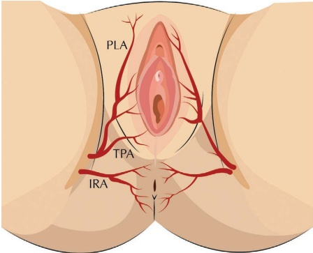
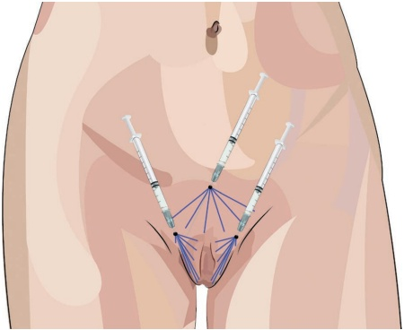
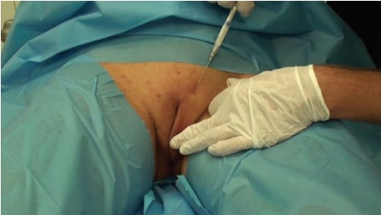
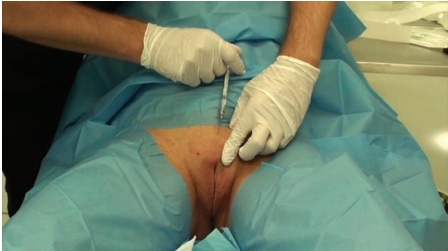
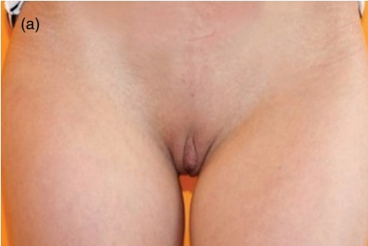
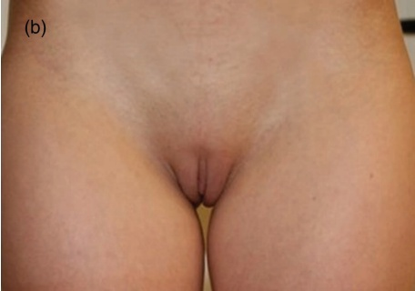

39 私密区域：大阴唇和阴阜再年轻化
大阴唇和耻骨区域的再年轻化
JANI VAN LOGHEM, JOB THUIS 和 PIETER SIEBENGA
39.1 引言
女性生殖区域的美容手术近年来日益流行。事实上，国际美容整形外科学会（International Society for Aesthetic Plastic Surgery）作为全球公认的认证美容整形外科医生领先专业组织，报告称阴道美容手术的使用量有所增加，2016年达到峰值，增加了45% [1]。与身体其他部位一样，生殖器也会受到年龄相关变化的影響。耻骨和大小阴唇皮下脂肪的流失以及真皮层胶原蛋白和弹性纤维的丢失，通常被认为会增加皮肤的松弛度和皱纹，使其呈现衰老的外观 [2,3]。随着雌激素水平随年龄下降，皮肤厚度和血管化也会受到更年期荷尔蒙变化的影响 [4]。此外，小阴唇与大小阴唇的比率会发生变化，使得小阴唇相对于大小阴唇更为突出 [5]。这些变化不仅影响生殖区域的美学外观，还可能影响女性的自尊心 [6]。
目前尚无标准化的女性生殖器增补方法，但有作者报告使用羟基磷灰石钙（CaHA）通过收紧耻骨和大小阴唇的皮肤来再年轻化外阴的外观 [7,8]，尤其是在萎缩的晚期病例中 [9]。
39.2 解剖学危险点
在进行耻骨和大小阴唇再年轻化手术过程中，可能涉及的解剖学危险包括后大阴唇动脉、横阴道动脉和尾直肠动脉，如图39.1所示。
39.3 大阴唇和耻骨再年轻化的钝性套管针技术
注射定位请参见图39.2。
39.3.1 分步技术
-
对消毒并标记治疗区域。
-
将1.5 mL CaHA与最高0.6 mL的利多卡因和肾上腺素进行稀释，使产品易于扩散至组织但仍能保持成形能力。
-
使用21G锐针对麻醉并设置三个入点：每个大小阴唇一个入点（图39.3）以及耻骨正中线一个入点（图39.4）。


-
使用22G、70 mm钝性套管针，在真皮-真皮下交界处以线性逆行丝线注射CaHA。大小阴唇两侧各使用半支注射器。
-
仅治疗大小阴唇的前部。产品迁移至最低点的风险


当大阴唇后部也进行治疗时，增加的程度会更高。这会导致美观效果不理想。
有关术前和术后结果以及应用技术，请参阅图 39.5。
39.4 为达到最佳效果的附加治疗
外阴的年轻化可以与透明质酸填充剂或自体脂肪注射结合使用，以增强女性生殖区域。可考虑与女性生殖器年轻化联合进行的其他整形/美容手术包括大阴唇成形术、阴蒂包皮缩小术、阴道成形术和会阴成形术。色素沉着区域对三氯乙酸（TCA）焕肤或激光反应良好，使用此类技术后可进一步增强观察到的皮肤质量改善效果。
参考文献
[1] L. Triana et al., “Trends in surgical and nonsurgical aesthetic procedures: A 14-year analysis of the international society of aesthetic plastic surgery—ISAPS,” Aesthetic Plast Surg, vol. 48, no. 20, pp. 4217–4227, 2024.
[2] C. A. Hamori, “Aesthetic surgery of the female Genitalia: Labiaplasty and beyond,” Plast Reconstr Surg, vol. 134, no. 4, pp. 661–673, 2014.
[3] S. H. Kim et al., “Rejuvenation using platelet-rich plasma and lipofilling for vaginal atrophy and lichen sclerosis,” J Menopausal Med, vol. 23, no. 1, pp. 63–68, 2017.
[4] R. L. Binder et al., “Histological and gene expression analysis of the effects of menopause status and hormone therapy on the vaginal introitus and labia majora,” J Clin Med Res, vol. 11, no. 11, pp. 745–759, 2019.
[5] B. Hersant et al., “Labia majora augmentation combined with minimal labia minora resection: A safe and global approach to the external female genitalia,” Ann Plast Surg, vol. 80, no. 4, pp. 323–327, 2018.
[6] G. J. Alter, “Aesthetic labia minora and clitoral hood reduction using extended central wedge resection,” Plast Reconstr Surg, vol. 122, no. 6, pp. 1780–1789, 2008.
[7] J. A. van Loghem, “Use of calcium hydroxylapatite for augmentation of the labia majora and mons pubis,” vol. 2, no. 1, pp. 010–013, 2017 [online], www.sciresliterature.org/Dermatology/DCR-ID15.pdf.
[8] V. de Carvalho Amaral, “Fios de PDO, hidroxiapatita de cálcio e ácido l-polilático para flacidez vulgar—indicações, técnica e resultados,” Surg Cosmet Dermatol, vol. 15, no. 0, pp. 1–5, 2023.


[9] C. L. Vilela 等人，“大阴唇萎缩的治疗：羟基磷灰石钙还是透明质酸，”《美容整形外科》，第 48 卷，第 3 期，第 472–477 页，2024 年。